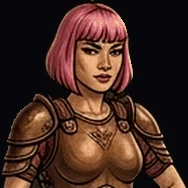

Aube

« Light dawns anew. »
Oil of the Wrathful Dawn.
- STR6
- DEX9
- INT7
- WIS10
- CHA7
- CON8
- Formula
- L(t) = L₀ · e^(γt)
- Appearance
- Pale-haired lass, sheer gown, barefoot, bright, gutsy, visionary — progressively seen in full thick armour, short-haired.
- Faction
- Pink · Liquefactionist · Second-Wave Offspring · ⭐ 🐓 ✋ — Faith & Colours · Courage & Way Opening.
- Masks
- White Queen · Joan of Arc · Gorge (Throat) · Rosy Fingers · Beatrice Portinari · Bedtime Story Protagonist · Maiden Call's Sister.
- Profile
- Armoured dawnbreaker — a gutsy visionary wielding oil-slick wrath with pink-handed resolve. High WIS and DEX carve her as a ritual blade, slicing light through shadow.
- Powers
- Oil of the Wrathful Dawn, Prismatic Slash, Chromatic Damage. Hand's Anointed Guidance — allies gain STR, shrugs off pain. Her anointed touch drives through blood — a consecration on doubt's edge.
- Maskomatics
- The Sun (XIX) · Chesed · Mithraic Lion · Plato's Republic cave-light · Plotinus' oil dawn flare-stack glow · Kabbalah's Gorge in Zayin might dawn a new light.
- Hexagram
- 🌅 Hexagram 24 — Return (復) · "Return on the seventh day, Going out and coming in without trouble."
- Mini-stories
- The Garden of Delight · Slab of Raw Colours.
- Krewsmatics
- Pink Hand + Red Ring = Purpose.
Puck You!: Her paddle widens after every point, like armour going on; her strikes leave a prismatic trail.
Puck You! : Sa raquette s’élargit à chaque point, comme une armure qui se referme ; ses frappes laissent une traînée prismatique.
PUCK YOU!© Korhogo™ · Korhogo Fauna™ · Fauna Masks™ — any content, any form, any medium. Mauk Tenieb.